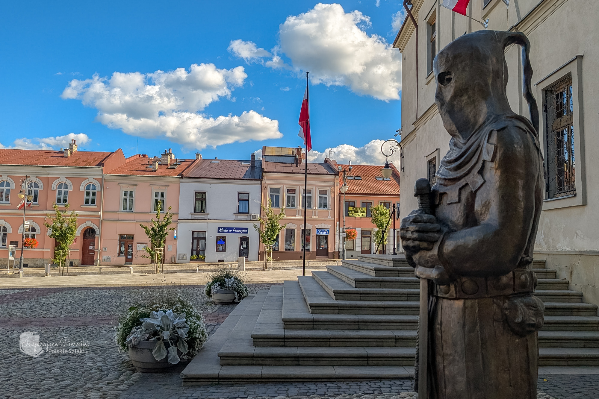
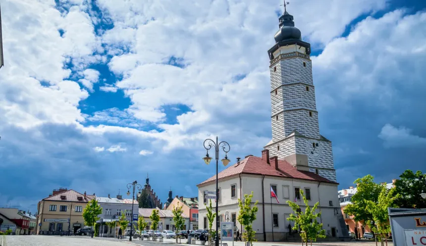
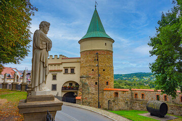
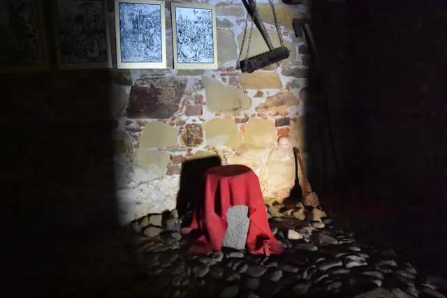

Why Biecz?
Biecz, a historic town speculated to be teaching beheaders
The sheer number of executions enacted in XV century gave rise to the popular legend that there existed an executioners' school in Biecz. It is likely that this is the invention of a 19th-century author, as trade schools did not exist during the Middle Ages. Nevertheless, the legend is a popular one, and some historical scholars have even devoted time to study the possibility.
The area of Biecz has been settled periodically since the Neolithic period, though the first mentions of a named settlement date back to the 11th century. This early medieval town was approximately 500 metres (1,600 ft) from the modern one. By the 12th century, the town had become a castellany, and by the mid-14th century, it had been granted rights based on Magdeburg Law. Biecz enjoyed a cultural and economic renaissance during the 14th and 15th centuries. Beginning in the 17th century, the town was beset by a number of natural disasters, including flooding, fires, and a plague which killed all but 30 inhabitants. The town suffered heavy population losses during World War II, including a public massacre of 200 local Jews in the market square in 1942.
sightseeing
Places worth seeing when in Biecz

Town Hall in Biecz
Originally Gothic, with walls made of brick and decorated with tall windows. The town hall had a watchtower with a clock. In the 16th century the tower collapsed and a young trumpeter died in its ruins. After the tower collapsed, reconstruction began, thanks to funds from Marcin Kromer. The new tower, in keeping with the prevailing Renaissance fashion, was topped with a dome, and the walls were decorated with sgraffito in geometric patterns.
Address:
Rynek 1, 38-340 Biecz
What I like about it
The beautiful view from the tower upstairs!

The house with the tower
This is a historic tenement house raised in 1523. It is located in the western part of the city, on Węgierska Street. At the entrance to Biecz from the west, he greets us with a magnificent tower. Part of the building is below street level. This is because the city is located on a hill. The House with the Tower currently houses one of the branches of the Biecz Land Museum.
Address:
Węgierska 1, 38-340 Biecz
What I like about it
The museum that talks about the city's history and the apothecary was fascinating to me.

Turma under the Biecz town hall tower
The medieval prison in Biecz town hall had two rooms and a dungeon. The room above the dungeon was also used for torture. Biecz had the right to impose and carry out death sentences from the 14th century. Executions took place in the market square and at the gallows outside the city walls. The executioner was a city official known as the “master of holy justice.” Prisoners left 17th-century inscriptions, including names, dates, and initials, on the underground walls.
Address:
Rynek, 38-340 Biecz
What I like about it
The whole legend behind it is fascinating to me. Being able to see proof is chilling.